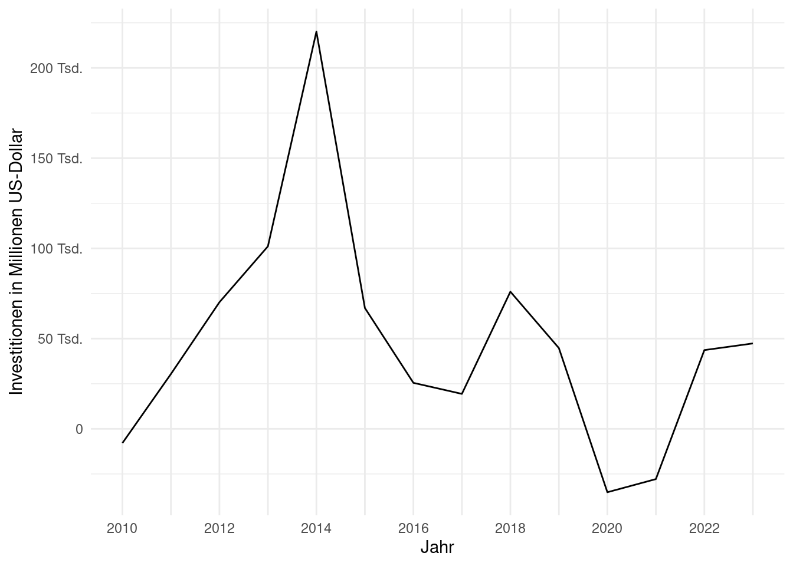

Ihr merkt, es geht gerade Schlag auf Schlag. Ich hab nur noch einen Essay als Prüfungsleistung vor mir und da ich plane, ab Anfang Juli bis Mitte August komplett auf Fahrt zu sein (wenn auch mit einzelnen Erholungstagen zwischendrin), möchte ich möglichst viel berichten, solange es noch frisch ist. Wenn ihr mit dem Lesen nicht hinterherkommt, stresst euch nicht, im Juli und August wird nicht so viel kommen, denke ich – und danach läuft der Blog euch auch nicht weg…
Wo waren wir stehen geblieben… – beim ყაზბეგი (Qazbegi). Als nächstes kamen Christof und Claudia nach თბილისი (Tbilisi). Die beiden sind gerade auf Weltreise beziehungsweise jetzt jetzt, während ich diesen Artikel schreibe fast schon auf der Rückreise. Christof und Claudia kenne ich übers BalFolk in Marburg, genauso wie auch Mattheus. Aus dem BalFolk entstand dann unsere Katzenrunde, eine kleine gemütliche Wohnzimmersingerunde mit selbstgeschriebenen Liedern, die wir in mittlerweile zwei Liederbüchern zusammengestellt haben. Inzwischen haben wir auch einen YouTube-Kanal zum auditiven Lernen. Mit dem zweiten Band sind wir da etwas ins Stocken geraten, aber der erste ist vollständig online! Nun ja, und als Christof und Claudia vorletztes Jahr (meine Güte, so lange ist das schon her??) geheiratet haben, haben Mattheus und ich ihnen ein Lied mit auf den Weg gegeben, den „Walzer, im Freien zu tanzen“. Letzten Sommer sind die beiden also losgezogen (leider vor mir, sodass sie nicht beim Abschiedskonzert dabei sein konnten) und nach knapp zehn Monaten Abstinenz stand jetzt unser Wiedersehen kurz bevor.
Insgesamt waren Christof und Claudia drei Wochen hier in Georgien, nach einer Woche kamen sie nach თბილისი (Tbilisi). Auf dem Weg zum ersten Wiedersehen hatte ich schon etwas Bammel – im (unmittelbaren) Vorhinein meines Besuchsmarathons hatte ich viele Ängste, dass es zu viel sein könnte und dadurch gar nicht richtig schön für mich, dass ich Erwartungen nicht gerecht werden würde, dass ich mich für Dinge würde rechtfertigen müssen, die ich nicht unternommen, quasi verpasst habe. Gerade letzteres war gar nicht wirklich realistisch (und inhaltlich auch eigentlich voll falsch), aber Ängste sind ja bekanntermaßen nicht immer rational. Kurzum: Es war überhaupt nicht so, wie befürchtet – ganz im Gegenteil.
Die Zeit mit Christof und Claudia war so leicht und schön, sie wird ganz sicher mit die schönste während des ganzen Jahres gewesen sein. Aber jetzt fange ich wirklich mal an mit Erzählen…

Diese Form des Brotes (das, was unten im Ofen klebt) heißt თონის პური (Tonis Puri, was Tone-Brot bedeutet). თონე (Tone) ist ein spezieller Ofentyp, der in anderen Sprachen als Tandoor/Tandur bekannt ist (z.B. Hindi, Urdu, und sehr ähnlich auch Armenisch, Kurdisch, Türkisch, Aserbaidschanisch). Es gibt grob zwei verschiedene Arten von თონის პური (Tone-Brot): einmal länglich, ähnlich aussehend wie das am Spieß, und einmal mit Bauch, so wie es im Ofen klebt. Dazwischen wird meines Wissens nicht differenziert, beides wird als პური (Puri = Brot) und თონის პური (Tone-Brot) verkauft.
Darüber hinaus gibt es grundlegend drei verschiedene Arten von Brotgebäcken, die man in quasi jeder Bäckerei und an jeder Ecke überall in Georgien findet: ხაჭაპური (Khachapuri) und ლობიანი (Lobiani). ხაჭა (Khacha) bedeutet Käse, ხაჭაპური bedeutet dementsprechend einfach nur „Käsebrot“. Dabei ist ხაჭაპური mitnichten gleich ხაჭაპური. Es gibt zahlreiche verschiedene Sorten, die vor allem je nach Region differieren:


Es gibt noch viele weitere Arten (eine ist auch dieses längliche auf dem Ofenbild – das wird dann einfach nur unter ხაჭაპური / Khachapuri verkauft), aber das sind die drei verbreitetsten. Der andere Standard ist ლობიანი (Lobiani). ლობიო bedeutet Bohne, dementsprechend ist ein ლობიანი ein mit Bohnen gefülltes Brot.
So, wäre das auch mal geklärt. Das sind zwei der typischsten georgischen Gerichte (natürlich neben ხინკალი / Khinkali).
Erinnert ihr euch an die Seilbahn vom letzten Mal, die bei mir in der Nähe ist? Mit Christof und Claudia war ich auch da und wir haben uns auf der anderen Seite noch alte (ehemalige) Studierendenwohnheime angeschaut, die wirklich sehr beeindruckend aussehen.


Soweit ich weiß, sind das keine Studierendenwohnheime der TSU (meiner Uni), waren das aber mal. Das macht auch Sinn, schließlich stehen auf der anderen Seite lauter Uni-Gebäude (siehe „Neue Blicke auf die Stadt“). Ich hab über die Seilbahn nochmal recherchiert und tatsächlich wurde diese wohl nach ihrer Inbetriebnahme 1983 nur wenige Jahre benutzt, weil sie dann baufällig wurde. 2004 geschlossen, 2021 neu eröffnet. Wann die Brücken gebaut wurden, weiß ich leider nicht, vielleicht finde ich da noch was. Heute leben in den Wohnheimen übrigens auch IDPs aus Abkhazien.

თბილისი (Tbilisi) ist die Stadt der abgewrackten Autos. Das ist auch kein Zufall. Georgien importiert Massen an europäischen und amerikanischen Unfallwagen, die bei uns den Status Totalschaden tragen. Geballte Kompetenz im Karosseriebau gibt es hier offenbar genug, denn vieles wird einfach wieder instandgesetzt. Ich hab das gerade mal recherchiert. Im Jahre 2020 gingen laut Umweltbundesamt 169.968 Fahrzeuge ins Nicht-EU-Ausland. 66.649 davon (39 %) nach Westafrika, 31.908 (19 %) in Staaten der ehemaligen Sowjetunion (ohne Baltikum). Diese 19 % teilen sich auf folgende Länder auf: Ukraine (17.774, 10 %), Georgien (8.059, 5 %) und Russland (775, 0,5 %). Gemessen daran, dass Georgien ein so kleines Land ist, ist das ganz schön viel – für lediglich ein Jahr und lediglich ein Land.
Einerseits werden diese Autos hier aufgemöbelt und weiterbenutzt. Andererseits stehen sie irgendwo als Materiallager zum Ausschlachten rum – und das produziert dann Bilder wie das obige. Man könnte eine ganze Fotoserie nur mit abgewrackten Autos machen (fahrend und nicht mehr fahrend), damit ist man dann nh ganze Weile beschäftigt.
Übrigens habe ich das Rätsel der georgischen Kennzeichen gelöst (oder die Lösung gefunden): Siehe dieser Blogartikel und dieser.

Nach begeistertem Skybridge- und Gondel-Besuch, inklusive leckerem Mittagessen: ხაჭაპური (Khachapuri), Tomaten, Gurken, wendeten wir uns am nächsten Tag einem Messegelände zu, das sich selbst „Expo Georgia“ nennt.

Expo Georgia gibt es seit 1958 und laut eigenen Angaben ist es das einzige Ausstellungszentrum in Georgien. Der alte Name ist „Ausstellung der Errungenschaften der Volkswirtschaft“. Herrlich, diese Sowjetnamen, so praktisch kurz und einprägsam.


Und dann geht es ans eigentliche Abenteuer. Gleich in der Nähe gibt es eine äußerst wackelige Brücke über die Eisenbahnschienen, von der man einen guten Blick auf alte Waggons und Wagen haben soll. Das ist natürlich hochinteressant. Vor Ort angekommen, stellen wir fest, dass man auch einfach über die Gleise gehen kann. So selten wie hier Züge fahren, ist das nicht wirklich gefährlich und so tasten wir uns vor…


Wobei der Schienenverkehr eigentlich auch gerade ein neues Hoch erleben dürfte, zumindest was den Güterverkehr angeht. Denn Georgien ist ein Schlüsselzentrum für Chinas „Neue Seidenstraße“ („One Belt, One Road“ bzw. „Belt and Road Initiative“, mehr dazu bei der Deutschen Welle). Georgien hat seit 2014 ein Freihandelsabkommen mit der EU, seit 2017 eins mit China. China investiert massiv in Georgien und das ist an vielen Stellen zu sehen – ob bei Tunnel- und Autobahnneubauten zugunsten der einzigen wirklichen Autobahn des Landes, ob bei Schieneninfrastruktur (Strecke Kars-Tbilisi-Baku, die leider immer noch nicht für den Personenverkehr geöffnet wurde) oder beim Schwarzmeer-Hafen in ფოთი (Poti). Überall sind „chinesische“ Baustellen zu sehen, gut erkennbar an Schriftzeichen, Beflaggung, Belegschaft. Einordnend muss aber auch hinzugefügt werden, dass im Jahr 2023 lediglich 3 % der ausländischen Investitionen aus China kamen.1


Diese Form der Bahnübergänge habe ich hier nun auch schon öfter gesehen…


Mit ganz viel erstklassigem Bahncontent belasse ich es dabei für heute erstmal. Aber keine Sorge, heute ist nicht alle Tage, ich komme wieder, keine Frage! Schon bald, dann gibt’s auch endlich mal wieder Fußball, versprochen 🤞.
PS: Ich habe meine Ordnerstruktur umgestellt. Eigentlich hab ich alle relevanten Punkte getestet, aber wenn es irgendwie Probleme in irgendwelchen Artikeln gibt, sagt gern Bescheid.
Aktuelle Empfehlungen
- Gibt’s heute mal nicht.
Made with Quarto.